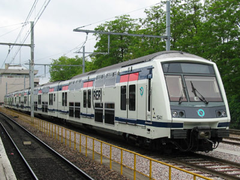
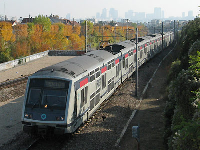
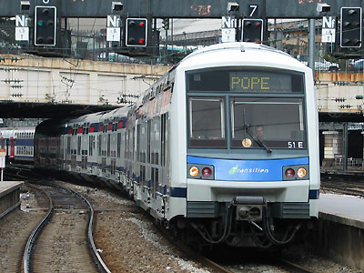
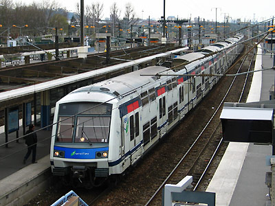

Ferrovia - 15 Juin 2012
Z 22500 / MI2N - Altéo
La saturation du RER A posait de gros soucis à la RATP qui ne pouvait faire face à l'affluence malgré la signalisation SACEM très performante permettant d'espacer les trains à deux minutes. L'utilisation de matériels à deux niveaux déjà utilisés sur les lignes de RER SNCF ne lui convenait cependant pas. Bien que très capacitaires, les Z 20500 ne disposent que de deux portes par face et par caisse. Les temps d'arrêt en gare devenant alors rédhibitoires pour assurer l'espacement serré des trains. Des essais avaient été menés avec une remorque intercalée dans un MS 61 comportant deux sections à deux niveaux encadrant une troisième porte centrale. Les Altéo co-exploités par la RATP et la SNCF sur le RER A dérivent directement de ces essais. Pour équiper le RER E "Eole", la SNCF a commandé les Z 22500 très proches des Altéo. Ces deux familles composent les MI2N (Matériel d'Interconnexion à 2 Niveaux).
Les différences sont peu visibles. Sur les Altéo, les salles supérieures possèdent des escaliers de chaque côté. En revanche, la plateforme centrale des Z 22500 ne permet d'accéder qu'aux salles inférieures. La motorisation est plus largement dimensionnée sur les Altéo qui comportent trois motrices encadrées par deux remorques pilotes. La caisse centrale des Z 22500 est une remorque. Les Z 22500 sont équipées de marchepieds amovibles compatibles avec les quais bas SNCF.
Durant la rénovation des Z 6400, cinq rames Z 22500 étaient visibles sur la ligne Paris-Saint Lazare/Nanterre Université/Maisons-Laffite.
Composition des rames
Altéo RER A : R 1501 + M 2501 + M 3501 + M 2502 + R 1502
Z 22500 : R 221501 + M 22501 + R 222501 + M 22502 + R 221502
Quelques données techniques
Constructeur : GEC Alstom, ANF
Tension d'alimentation : continu 1,5 kV et monophasé 25 kV, 50 Hz
Pour plus d'info :
Les fiches Z 22500 et Altéo sur Wikipedia
Le dossier et le parc MI2N / Z 22500 sur Metropole.net (archive)
Fiche technique des Z 22500 de Florent Brisou
L'inventaire des Z 22500 sur Trains du Sud-Ouest

Le MI2N Altéo 3521 à Rueil-Malmaison (22/05/2003)

Le MI2N Altéo 3517 franchit le saut-de-mouton de Houilles (05/11/2003)

La rame 51E (Z 22601/02) termine sa mission POPE à Paris St Lazare (02/07/2003)

La Z 22535-6 sur le RER E, à Noisy le Sec (25/03/2004)